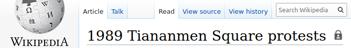
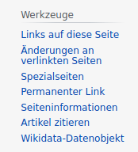
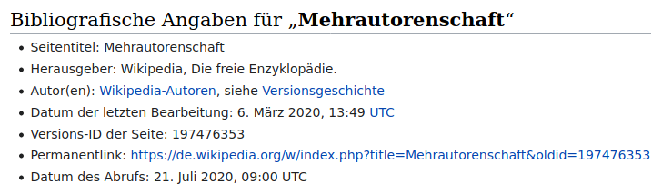

Kapitel 2 - Ansätze einer digitalen Quellenkritik
Die vorgestellten Untersuchungen und Projekte vermitteln einen flüchtigen Einblick in die Möglichkeiten des Quellenmaterials sowie einen groben Überblick über die bisherige Forschung. Hierbei fällt auf, dass sich nur sehr wenige historiografische Ansätze und Methoden in den Bibliografien und Projektverzeichnissen wiederfinden. Das ist im besonderen Maße enttäuschend, da viele Untersuchungen voraussichtlich von einem kritischeren Umgang mit dem Quellenmaterial profitieren würden – einem zentralen Merkmal der historisch-kritischen Methode. Bisher mangelt es jedoch trotz diverser Aufrufe noch an etablierten Ansätzen einer historischen Quellenkritik genuin digitaler Objekte, wie sie in der Wikipedia anzutreffen sind. 1
Eine Grundlage für diesen notwendigen Diskurs hat Föhr 2018 mit seiner Dissertation zur Historischen Quellenkritik im Digitalen Zeitalter geschaffen. 2 Darin bietet er einen breiten Überblick über verschiedene Probleme beim Wechsel von klassischen hin zu digitalen Quellen. Er bietet eine grundlegende Charakterisierung digitaler Quellen an, die auch als Grundlage für die folgenden Kapitel dienen soll. Hierzu verwendet er den Begriff des digitalen Objekts als Sammelbegriff für alle als Quellen geeigneten Strukturen, die aus digitalen Daten bestünden und somit nur mittels eines Ausgabegeräts wahrgenommen werden könnten. Daten, die auf unterster Ebene als Binärcode vorlägen, seien hierbei als die kleinsten Elemente eines Wertebereichs zu verstehen und würden erst durch die Verarbeitung und Kontextualisierung zu Informationsträgern. 3 Daten, die wiederum der Beschreibung anderer Daten dienten, seien als als Metadaten zu bezeichnen. 4 Durch sie können Teile eines digitalen Objekts in einen gemeinsamen Kontext gesetzt sowie dem Objekt selbst weitere Informationen zugeordnet werden. 5 Während die im zuvor dokumentierten Diskurs häufig erwähnten Retrodigitalisate Abbilder eines physischen Objekts im digitalen Raum sind, müssten genuin digitale Artefakte jedoch als inhärent digital verstanden werden und könnten folglich nicht aus dem digitalen Raum gelöst werden. Erst durch das Zusammenspiel von Daten, Wiedergabegerät und den möglicherweise multiplen Darstellungsformen dieser Daten ergäbe sich das eigentliche digitale Objekt. 6 Somit könnten digitale Objekte zwar nicht von ihrer Darstellung getrennt werden, jedoch bewirke ihre elektrische Speicherung in binärer Codierung, dass sie als datenträgerunabhängig zu betrachten seien. 7 Im Gegensatz zu physischen Artefakten spiele Abnutzung bei ihnen keine Rolle und durch ihren codierten und flüchtigen Zustand wäre eine Kopie stets ein perfekter Klon. 8 Föhr fasst die Eigenheiten dieser Quellenart wie folgt zusammen:
Digitale Objekte unterscheiden sich von bisher bekannten Objekten durch die ausschliessliche Digitalität, die verlustfreie und fehlerfreie Vervielfältig- und Wiederverwendbarkeit, die nicht nachvollziehbare Manipulation sowie dadurch, dass sie zwingend auf ein spezifisches, digitales Informationssystem angewiesen sind. 9
Aus diesen Eigenheiten folgt jedoch, dass die traditionelle historische Quellenkritik an vielen Stellen als ungeeignet zur Bewertung eines digitalen Objektes betrachtet werden muss, wofür insbesondere die fehlende Körperlichkeit verantwortlich ist. Weiterhin gilt dies für die Metadaten, die folglich dieselben Probleme aufweisen.
Im Anbetracht der Dringlichkeit des Themas bleibt Föhr mit seinen Ausführungen zur Quellenkritik jedoch sehr vage und formuliert eher eine allgemeingültige Näherung zum Thema, als einen direkt umzusetzenden Leitfaden. Dass es schwerlich ein einzelnes Handbuch zum Umgang mit digitalen Quellen geben kann, zumindest zu diesem Zeitpunkt in der Entwicklung der Digital History, wird beim Vergleich mit anderen Quellenarten offenbar. Der Unterschied zwischen digitalen und herkömmlichen Quellen entspricht hierbei eher dem Unterschied zwischen epochalen Fachbereichen, als jenem zwischen einzelnen Hilfswissenschaften. Es existieren also durchaus Parallelen, jedoch sind die Unterschiede zwischen einzelnen Quellenarten dergestalt, dass sie jeweils eigene Herangehensweisen verlangen. An eine auch nur annähernd vollständige Erfassung aller spezifischen Quellenarten innerhalb der Gruppe der digitalen Quellen ist mit dem heutigen Forschungsstand kaum zu denken. 10 Entsprechend wird sich die Digital History zukünftig immer wieder mit neuen genuin digitalen Quellengattungen auseinandersetzen müssen.
Die hiesige Untersuchung nähert sich dem Ziel einer Quellenkritik genuin digitaler Daten daher über einen definierten Quellenbestand. Ausgehend von den Erkenntnissen aus der Wikipedistik wird im Folgenden eine historische Quellenkritik der Wikipedia diskutiert und anschließend exemplarisch durchgeführt.
2.1 Zur Struktur des digitalen Objekts Artikel
Um die Theorie dem Untersuchungsgegenstand anzunähern, muss zunächst der Begriff des digitalen Objekts im vorliegenden Forschungs- und Quellenkontext geklärt sowie dessen Ausmaße definiert werden. Diese Untersuchung und Diskussion orientiert sich hierbei zunächst an spezifischen Artikeln der Wikipedia. Von diesen ausgehend, kann anschließend die Definition funktionell erweitert werden. Selbstverständlich kann eine derartige Definition je nach Methodik und Fragestellung auch unter Verwendung des selben Quellenkorpus anders ausfallen.
Üblicherweise wird unter dem Begriff Wikipedia Artikel ein HTML-Dokument verstanden, das nach einer Stichwortsuche zu einem beliebigen Thema von der soeben verwendeten Suchmaschine angeboten wird. Diese Vorstellung entspringt jedoch dem Umgang mit gedruckten Lexika, bei denen der Text eines Lemmas bereits das vollständige lexikalische Objekt darstellt. Die digitalen Objekte, die wir als Artikel bezeichnen, sind jedoch weitaus komplexer und Umfangreicher, als ihre gedruckten Vorbilder. Im Vergleich mit klassischen Quellen erinnern sie dabei eher an einen Kodex als an ein einzelnes Diplom. Denn ähnlich dem Kodex fassen die Artikel verschiedene Objekte und Strukturen unter einem Thema zusammen, wobei die Bearbeitung einzelner Teile unterschiedliche Methoden erfordern kann und somit auch der Aussagegehalt variiert. Dementsprechend ist es nötig, diese Objekte zunächst in ihre Bestandteile zu zerlegen und die einzelnen Teile auf ihre Funktion innerhalb einer Untersuchung hin zu bewerten.
In Anbetracht der Hypertextualität der Objekte, eine Eigenschaft fast aller Webdokumente, droht ein solches Vorhaben schnell zu eskalieren, da über Querverweise zwischen Artikeln sowie über Kategorisierungen vielfach ineinander verschachtelte Strukturen entstehen können. Diese Eigenschaften bewusst ausklammernd, beschränken wir uns zunächst auf die technisch notwendigen Bestandteile einer einzelnen Instanz dieses Objekttyps. Dies dient der Vereinheitlichung und Vereinfachung der folgenden Quellendiskussion.
Die oberste Ebene eines Wikipedia Artikels bildet die Zugehörigkeit zu einer Sprachversion. Sämtliche Seiten der Wikipedia existieren stets explizit im Namensraum einer einzigen Sprachversion, folglich sind sämtliche Sprachversionen der Wikipedia relativ unabhängige Instanzen, die jedoch durch Hyperlinks semantisch miteinander verbunden sind. Die Links in der Seitenliste unter dem Abschnitt In anderen Sprachen verweisen somit auf sinnverwandte Artikel in anderen Sprachversionen, die dem aktuellen Artikel explizit zugeordnet wurden. Diese Zuordnung wird über Normdaten des Projekts Wikidata gesteuert. 11
Das Objekt Artikel im Kontext Sprachversion selbst ist wiederum zweigeteilt. Zentral für die alltägliche Benutzung ist die Inhaltsseite, die mit dem Reiter Artikel betitelt wird. Die Artikelseite stellt dabei die jeweils aktuelle, bzw. die aktuell freigegebene Artikelversion dar. Neben dem Reiter Artikel führt der Reiter Diskussion auf die zum Artikel gehörende Diskussionsseite. Diese ist mit dem vorangestellten Zusatz ‚Diskussion:‘ vor dem Artikeltitel überschrieben und bietet einen Raum zur Diskussion von geplanten Änderungen oder umstrittenen Aspekten des Artikels. Diese Zweiteilung der Inhaltsseiten ist eine Kernfunktion der MediaWiki-Software und findet sich deshalb auf praktisch allen Inhaltsseiten der Wikipedia. 12

Abbildung 1: Titelleiste und Reiter der englischsprachigen Wikipedia.
Eine weitere Kernfunktion ist die Versionierung von Änderungen. Sowohl für die Artikelseite, als auch die Diskussionsseite ist diese über den Reiter Versionsgeschichte zu erreichen. Die Versionsgeschichte ist im Gegensatz zu den Inhaltsseiten Artikel oder Diskussion eine automatisch erzeugte Seite. Algorithmisch von der Software angelegt und aktualisiert, kann diese von Usern nicht bearbeitet werden. 13 Die verantwortlichen Algorithmen basieren auf einer append-only-Logik, bei der sämtliche Änderungen am Text in einer neuen Kopie des Textes veröffentlicht werden, während die alte Version, so wie alle vorangegangenen, mitsamt Metadaten zur Bearbeitung gespeichert werden. Diese Artikelhistorien dienen üblicherweise der Nachvollziehbarkeit von Änderungen im editorischen Prozess und somit unter Anderem der Korrektur von Vandalismus. 14 Im Rahmen einer geschichtswissenschaftlichen Herangehensweise ermöglichen sie zudem den Zugriff auf die vollständige Entwicklungsgeschichte eines Artikels. Zusätzlich zu den einzelnen Artikelversionen werden dort die jeweils verantwortlichen User, der Zeitpunkt der Änderung und neben einigen technischen Details auch ein Kommentar zu den vorgenommenen Änderungen aufgelistet.
ie Auslagerung der Versionsgeschichte in einen separaten Reiter suggeriert hierbei eine Unterordnung der älteren Versionen gegenüber dem aktuellen Artikeltext. Dieses Design ist natürlich auf die eigentlichen Anwendungsfälle, üblicherweise der niedrigschwellige Zugriff auf lexikalische Inhalte, ausgerichtet und sollte nicht von der tatsächlichen technischen Struktur des digitalen Objekts ablenken. Weiterhin ist der initial angezeigte Artikeltext für unsere Herangehensweise als gleichwertig zu allen anderen unter Versionsgeschichte aufgelisteten Artikelversionen zu verstehen. Eine endgültige Bewertung der Relevanz einzelner Artikelversionen für eine Untersuchung kann erst nach einer zeitlichen Eingrenzung des Untersuchungsgegenstandes und unter Betrachtung der vorliegenden Metadaten erfolgen.
Zusammenfassend muss ein Wikipediaartikel also als komplexes digitales Objekt verstanden werden. Ein solches Objekt besteht aus mindestens einer Sprachversion, für die jeweils sowohl eine Liste an Artikeltextversionen als auch Diskussionstextversionen vorliegt. Jeder Textversion sind zudem weitere Metadaten zugeordnet. Diese Struktur lässt sich regelmäßig auf verschiedene Seitentypen eines Mediawikis (Projekte, Benutzer, etc.) übertragen.15
2.2 Kritik digitaler Prozesse
Dem nun bekannten digitalen Objekt Wikipediaartikel sind einige Informationen inhärent während andere als Metadaten bestimmte Teile des Objekts beschreiben. So kennen wir zum Beispiel die einzelnen Artikeltexte und zudem das jeweils zugehörige Datum der Veröffentlichung. Diese Informationen sind für folgende Auswertungen nützlich, das digitale Objekt selbst beschreiben sie jedoch nicht, sondern eben nur Teile, beziehungsweise deren Inhalte. Eine herkömmliche äußere Quellenkritik ist somit schwerlich möglich. So ist zum Beispiel eine Prüfung der Echtheit im Sinne der Originalität des Objekts bei derart ideal kopierbaren Objekten praktisch nicht durchführbar. 16
Je nach digitalem Objekt können Metadaten hilfreiche Informationen liefern. So beinhalten Digitalfotografien üblicherweise Exif-Informationen, die Hinweise auf die verwendete Kamera oder den Zeitpunkt der Aufnahme geben können. 17 Dokumente im XML-Format könnten Kommentare im Plaintext aufweisen oder Hinweise auf XSLT-Schemata enthalten, die wiederum Informationen zur Genese des vorliegenden digitalen Objekts liefern könnten. Digitale Akten enthalten möglicherweise Hinweise auf frühere Datenmigrationen, ein weiterer Prozess, der betrachtet werden sollte. 18 Diese Herangehensweisen sind streng genommen jedoch ebenfalls der inneren Quellenkritik zuzurechnen. All diese Informationen können mit relativ trivialen Mitteln manipuliert werden, was dank der Eigenheiten digitaler Objekte praktisch nicht nachvollziehbar ist. 19 Selbst vermeintlich klare Identifikatoren wie Dateiendungen sind nichts weiter als vage Empfehlungen an das Betriebssystem, wie die vorliegenden Daten zu interpretiert sind.
Eine besondere Stellung nehmen hingegen kryptografische Signaturverfahren ein. Mittels Hashes, qualifizierter Signaturen und asynchronen Verschlüsselungsverfahren werden insbesondere in Archiven abgeschlossene Datenbestände derart archiviert, dass eine Feststellung der Authentizität und Integrität der Daten gewährleistet und überprüft werden kann. 20 Da sich diese Verfahren jedoch bislang auf abgeschlossene Datensätze beschränken, und außerhalb solcher Einrichtungen kaum anzutreffen sind, legen Archive vermehrt ihre Prozesse zur Archivierung und Datensicherung offen. 21 Dieser Prozessfokus könnte auch im Rahmen einer historischen Quellenkritik zielführend sein.
Digitale Objekte sind zwangsläufig stets das Ergebnis angewandter Algorithmen, weshalb sich ihre Form aus zuvor definierten Prozessen ergibt. Der Text dieser Arbeit zum Beispiel wird von LibreOffice in einer XML-konformen Struktur gesichert und mitsamt der verwendeten Abbildungen in einem Container mit der Endung .odt abgelegt. Zwar sind anschließende Manipulationen auf der Bitebene nicht zu erkennen, jedoch können wir den Prozess der Erzeugung der Datei untersuchen. Somit könnten Abweichungen von der angenommenen Funktion einer Software identifiziert werden und unter Umständen sogar Auffälligkeiten des Zustands eines digitalen Objektes, wenn es nicht dem zu erwarteten Zustand gemäß Funktionsanalyse entspricht. Diese Herangehensweise lässt sich prinzipiell auf alle digitalen Objekte übertragen. Das Foto einer Digitalkamera wird ebenso algorithmisch erzeugt, wie eine gerenderte Videosequenz oder eine Tonaufnahme. Die von Föhr dargelegte Problematik bleibt hierbei zwar bestehen, das digitale Objekt selbst lässt sich nicht auf dessen Vergangenheit untersuchen, aber durch den Abgleich mit dessen algorithmischer Genese ließen sich möglicherweise bedeutungsvolle Rückschlüsse auf den Untersuchungsgegenstand ziehen.
Hierbei zeigen sich aber schnell diverse Herausforderungen. Zunächst ist dabei die Zugänglichkeit zum Quellcode der verwendeten Software zu nennen. Im oben angeführten Beispiel handelt es sich um ein open source Projekt, weshalb der Quellcode jederzeit öffentlich einsehbar ist. 22 Eine Prüfung der Implementation einzelner Funktionen wäre hier somit möglich. Da ein Großteil der häufig verwendeten Software jedoch nicht so transparent zur Verfügung steht, kommt dieser Ansatz nur für einen Teil der digitalen Objekte in Frage. Weiterhin erfordert eine solche Analyse ein tiefgehendes Wissen in der Softwareentwicklung sowie der verwendeten Programmiersprachen und -muster. Zudem können je nach Art des digitalen Objekts verschiedene Systeme an dessen Genese beteiligt sein, wodurch die Komplexität einer entsprechenden Analyse stark wächst.
Mit diesem Ansatz begeben wir uns in den Bereich des Softwaretestings, dessen Ziel das Überprüfen der Funktionalität von Programmen auf Grundlage der definierten Anforderungen ist. Vereinfacht können Testverfahren in statische und dynamische Methoden unterschieden werden. Mit statischen Analysen sind dabei insbesondere Audits des Quellcodes eines Programms gemeint, bei dem die Software selbst nicht ausgeführt wird. Die Interpretation des Quellcodes wird hierbei durch die auditierende Person selbst durchgeführt, wobei eine vollständige Quellcodedokumentation sowie eine vorliegende Funktionsspezifikation wichtige Voraussetzungen darstellen. Es wird hierbei versucht, die Designentscheidungen zur Implementation der geforderten Funktionen nachzuvollziehen und offensichtliche Fehler im Design zu erkennen. Gebräuchlicher und effektiver sind jedoch dynamische Testverfahren. Diese zielen darauf ab, möglichst realistische Laufzeitumgebungen zu schaffen und die Software selbst mittels definierter Testfälle auf eine korrekte Funktion zu prüfen. Derartige Verfahren beziehen auch Wechselwirkungen der Systeme mit anderen Softwarekomponenten mit ein und versprechen daher eine höhere Trefferquote. Gleichwohl ergänzen sich beide Ansätze üblicherweise, da die statische Quellcodeanalyse eine strukturierte Prüfung der Implementation selbst erlaubt, während dynamische Tests als Black-Box-Verfahren ohne genaue Kenntnis der internen Prozesse nur die Ergebnisse validieren können, nicht jedoch deren Zustandekommen.
Im Kontext einer Quellenkritik müssen diese Verfahren jedoch neu bewertet werden. Dem Fokus auf dem digitalen Objekt entsprechend erscheinen dynamische Methoden zunächst vielversprechender. Sowohl die historische Quellenkritik als auch dynamische Tests orientieren sich am Ergebnis, also dem Zustand des digitalen Objektes selbst. Sie prüfen dabei die Übereinstimmung mit einem Erwartungswert, bzw. verstehen Abweichungen davon als Indikatoren für Manipulationen. Weiterhin sind dynamische Verfahren an der realen Implementation der Software orientiert, die im Wechselspiel mit anderen Systemen arbeitet und daher mit Wechselwirkungen gerechnet werden muss. Jedoch sind solche Tests aufwendig, insbesondere im Fall von webbasierten Systemen. Im Falle von Wikipediaartikeln müssten daher sowohl die Datenbank, das Serverbetriebssystem, der Webserver sowie die MediaWiki-Software selbst beachtet werden, zumindest in einem idealisierten Fall. Dem Anspruch einer möglichst realitätsnahen Umgebung folgend, müssten hier zudem verteilte Services, Loadbalancing und weitere Technologien mit in Betracht gezogen werden, die seitens Wikipedia höchstwahrscheinlich zur Sicherung der Performanz und Stabilität zum Einsatz kommen. Ein solch komplexes System für eine historische Quellenkritik nachzubilden erscheint jedoch schwerlich angemessen.
Sehr viel einfacher zu implementieren wäre dagegen eine statische Quellcodeanalyse. Den Abstrichen in Hinblick auf mögliche Wechselwirkungen mit anderen Systemen steht eine nach wie vor fundierte Bewertung der Kernfunktionalität gegenüber, für die keine umfangreiche IT-Infrastruktur aufgebaut werden müsste. Gleichwohl erfordert auch dieses Verfahren vertiefte Kenntnisse der Forschenden in den Bereichen Softwareentwicklung und Testing.
Sowohl eine Alternative als auch Ergänzung zu beiden Verfahren stellen Bugtracker dar. Solche Systeme sind im Prinzip Datenbanken, in denen Strukturiert Fehlerberichte zu Software eingetragen werden können und die einen formalisierten Arbeitsablauf für diese Fehlerberichte vorsehen. Häufig haben derartige Systeme auch öffentlich zugängliche Portale, damit auch für ansonsten geschlossene Software seitens der User Fehler gemeldet werden können. Das oben erwähnte LibreOffice nutzt für diese Zwecke zum Beispiel eine Bugzilla-Instanz, während MediaWiki das eigene Portal Phabricator benutzt. 23 Diese Systeme ermöglichen eine strukturierte Suche nach Auffälligkeiten in zu untersuchenden Funktionen.
Die Wahl der angewandten Mittel muss je nach Quellengegenstand, Fragestellung, technischer Expertise der Forschenden sowie in Abwägung von erwartetem Nutzen und Aufwand getroffen werden. So ist davon auszugehen, dass nur die wenigsten Untersuchungen von einem komplexen dynamischen Testszenario profitieren würden, wohingegen eine kurze Konsultation öffentlicher Bugtracker auch bei kleineren Untersuchungen zu einem besseren Verständnis der Quellen sowie zu einer ansonsten schwerlich zu generierenden Sicherheit im Umgang mit den digitalen Objekten beitragen würde.
2.3 Quellensicherung
Diese kritische Evaluation der Prozesse muss selbstverständlich ebenfalls auf die zwangsläufige Verarbeitung der digitalen Objekte im Rahmen einer Untersuchung angewendet werden. Die Verarbeitung beginnt bereits bei der Betrachtung der digitalen Objekte, insbesondere bei online vorliegenden Quellen. Bereits beim Aufruf werden diese kopiert, übertragen und anschließend im Arbeitsspeicher des vom Forschenden benutzten Computers zwischengespeichert. 24 Untersuchungen behandeln somit stets lokale Kopien der Datensätze und nicht die Datensätze selbst, was prinzipiell dank der Datenträgerunabhängigkeit kein Problem darstellen sollte. Weiterhin ist Volatilität eine zentrale Eigenheit digitaler Quellen. Dies trifft im Besonderen Maße erneut auf Online-Quellen zu, wie zum Beispiel Webseiten aber auch die Wikipedia. Zwar verwendet das MediaWiki ein robustes System, um Revisionssicherheit und Verfügbarkeit zu gewährleisten, jedoch unterliegen die Server selbst vermutlich keiner Archivierung im klassischen Sinn, wie wir sie bei Papierakten erwarten würden. 25 Manipulationen oder Defekte auf Dateisystemebene sind technisch vorstellbar und das Ende der Wikipedia als Projekt darf auch nicht ausgeschlossen werden. Folglich erscheint Föhrs Forderungen nach einer Quellensicherung auch für digitale Objekte, unter Berücksichtigung ihrer Spezifika und der Problematik der Langzeitarchivierung im Digitalen, als absolute Notwendigkeit der digitalhistorischen Arbeit. 26
Die daraus folgende Frage ist: was wird wie von wem zu welchem Zweck gespeichert? Eine vollständige Sicherung von digitalen Objekten wird spätestens dann zu einem Problem, wenn Hyperlinks ins Spiel kommen. Zur Sicherstellung der Konsistenz eines Objektes müssen auch dessen Abhängigkeiten überprüft und unter Umständen mit in die Sicherung aufgenommen werden. Im Falle von abgeschlossenen Objekten wie zum Beispiel einem Film auf einer BlueRay, beschränken sich die assoziierten Objekte höchstwahrscheinlich auf zusätzliche Tonspuren, Videos und die zum Abspielen notwendige Software. Derartige Objekte sind also gut kapselbar. Im Falle von Web-Dokumenten mit Hyperlinks, wie im vorliegenden Fall, wird diese Abgrenzung sehr viel problematischer. Davon ausgehend, dass Links als kulturelle Assoziationen verstanden werden können, müssen diese verknüpften Objekte ebenfalls im Rahmen der Quellensicherung evaluiert werden. 27 Dabei müsste für jedes Objekt fallbezogen entschieden werden, welche verknüpften Objekte mit einbezogen werden und in welcher Tiefe. In einem Wikipediaartikel ist dies eine offenkundige Herausforderung, da umfangreiche Artikel regelmäßig thematisch aufgeteilt werden, um die Übersicht und Pflegbarkeit zu wahren. Für die Untersuchung sowie Quellensicherung ist dementsprechend festzulegen, welche verlinkten Artikel zusätzlich und in gleicher Weise betrachtet werden müssen.
Ein weiteres Problem stellt die individualisierte Präsentation digitaler Objekte dar. Insbesondere Webseiten binden häufig Nebeninhalte Dritter ein, zum Beispiel Werbung, die den eigentlichen Inhalt in einen bestimmten Kontext stellen. Da derartige Elemente jedoch nutzergebunden sind und keine fixe Verknüpfung mit dem eigentlichen digitalen Objekt aufweisen, wäre hier der genaue Umgang mit diesen Inhalten fallbezogen zu klären. Ein zusätzliches Problem findet sich in der Darstellung von Webinhalten selbst. Diese ist zwangsläufig abhängig von der verwendeten Software und Hardware und variiert ebenso, wie die zuvor erwähnten Nebeninhalte. Die Umsetzbarkeit einer vollständigen Objektsicherung ist somit stark vom betrachteten digitalen Objekt abhängig und häufig wohl ausgeschlossen.
Wenn eine vollständige Objektsicherung häufig nicht erreicht werden kann und eine simple Textsicherung nicht ausreicht, muss zur Sicherstellung der Falsifizierbarkeit ein Mittelweg gewählt werden. Die Speicherung nur der für die durchgeführte Forschung relevanten Daten durch die Forschenden selbst erscheint hier als naheliegende Lösung. Nach Föhr solle dieses Research Driven Archiving (RDA) insbesondere die Bedürfnisse von selbstständig Forschenden erfüllen und damit gleichzeitig verschiedenste Quellenarten abdecken können. 28 Diese pragmatische Sicherung der Arbeitsdaten könnte zudem Open Science Ansätze ergänzen, da somit von der bearbeiteten Quelle bis zur finalen Auswertung der Forschungsprozess nachvollziehbar gestaltet wird.
Die Schwierigkeit des Umgangs mit sowie die grundlegende Problematik der Definition historischer Forschungsdaten zeigt sich weiterhin in der Erklärung des geschichtswissenschaftlichen Konsortiums NFDI4Memory:
With a few promising exceptions, there is still no commonly established consensus within historically engaged disciplines about on what historical “research data” actually means, and discussions are continuing on how such data should be generated, standardized, integrated, stored, re-used, and published. 29
2.4 Akteure
Horizont und Tendenz der Autor*innen einer Quelle sind auch bei digitalen Objekten zentrale Ansatzpunkte einer inneren Quellenkritik und stehen folglich im Fokus dieser Untersuchung. Die Verantwortlichkeit für ein bestimmtes Objekt lässt sich hierbei zwar häufig den Metadaten entnehmen, jedoch ist das Konzept der Urheberschaft nicht zwangsläufig auf alle digitalen Objekte übertragbar, nicht deckungsgleich mit dem Ersteller des spezifischen Datensatzes oder aber schlichtweg nicht zu bestimmen. Anonyme Datensätze sowie der Umgang mit algorithmisch generierten Inhalten sind insbesondere für die weitere digitalhistorische Forschung zentrale Problemfelder, jedoch behandelt die vorliegende Untersuchung ein anderes Phänomen: die kollaborative Autorschaft. Zwar sind die Autor*innen eines Wikipediaartikels klar benannt und jede Änderung wird detailliert protokolliert, doch sind bei näherer Betrachtung die User nicht mit den Autor*innen im quellenkritischen Sinn gleichzusetzen. Insbesondere die Pseudonymität oder Anonymität der User sowie der kollaborative Schreibprozess erschwert die Identifikation von und Zuweisung von Verantwortung zu einzelnen Individuen. Zum besseren Verständnis der Problematik sowie zur Erarbeitung eines Lösungsansatzes werden im Folgenden verschiedene Problemfelder betrachtet. Zunächst wird hierbei die Herausforderung der Bestimmung von Verantwortlichen am verwandten Problemfeld der Zitierbarkeit diskutiert, anschließend wird das Verhältnis von Anonymität und Identität beleuchtet und schließlich ein Lösungsansatz mittels Netzwerkanalysen vorgestellt.
2.4.1 Urheberschaft, Gemeinschaft und Zitierfähigkeit
Die Herausforderung der Zuordnung von Verantwortlichkeit bei kollaborativ erzeugten Texten findet sich auch im Diskurs im die Zitierfähigkeit der Wikipedia im schulischen oder akademischen Kontext wieder. Die zentralen Probleme sind hierbei die befürchtete Flüchtigkeit der Artikelinhalte, also Änderungen oder Löschungen nach einer Sichtung, sowie die fehlende personelle Verantwortlichkeit für Inhalte.

Abbildung 2: Werkzeugleiste in der deutschsprachigen Wikipedia.
Der Wunsch nach einem Verweis auf einen unveränderlichen Artikeltext kann hierbei als vorrangig technische Herausforderung verstanden werden, die jedoch problemlos mit vorhanden Funktionen zu erfüllen ist. Zwar wird beim Aufruf eines Artikels üblicherweise die jeweils aktuellste, oder ggf. die letzte gesichtete, Version aufgerufen, jedoch kann mittels permanenter Links direkt auf eine bestimmte Artikelversion verwiesen werden. Diese Links enthalten dazu einen eindeutigen Identifikator der anzuzeigenden Artikelversion, wodurch ein manueller Abgleich ermöglicht wird. 30 Diese Funktion ist von jedem Artikel aus über die Werkzeugleiste auf der linken Seite zugänglich. (Siehe Abbildung 2) Die Funktion Artikel zitieren geht noch einen Schritt weiter und bietet eine vorformatierte Referenz inklusive permanentem Link zum Kopieren an. Eine eindeutige Referenz zu einer unveränderlichen Version des zu zitierenden Artikels anzugeben, sollte somit weder technisch noch methodisch als Hürde betrachtet werden. Die Zitierhilfe des MediaWikis offenbart jedoch das Kernproblem der Zitierfähigkeit von Wikipediaartikeln: die Autor*innenangabe.

Abbildung 3: Ausschnitt aus der Zitierhilfe zum Artikel "Mehrautorenschaft".
Inhaltlich ist die Angabe der Gruppe der Wikipedia-Autor*innen mit Verweis auf die zugehörige Versionsgeschichte als für den Artikel Verantwortliche durchaus korrekt und in anderen Disziplinen finden sich sogar Parallelen zu dieser Praxis. So urteilte zum Beispiel Zosel in Anbetracht der Zitationspraxis an deutschen Gerichten bereits 2009, dass der Richterspruch ‚im Namen des Volkes‘ vergleichbar wäre mit der Verantwortlichkeit der ‚Gemeinschaft der Wikipedia-Autor*innen‘ für einzelne Artikel. 31 Wissenschaftlichen Standards genügt dies jedoch nicht, denn hier bedarf es zumindest eines Hauptautors. Nach Wozniak müssen für die Bestimmung solcher Hauptautor*innen von Wikipediaartikeln die folgenden drei Bedingungen erfüllt sein:
(1) Klarname: Der Hauptautor muss namentlich bekannt sein, (2) quantitativer Anteil: dessen Anteil am Text muss eine bestimmte Grenze überschreiten und (3) qualitative Korrektheit: der Autor muss die Korrektheit der zitierten Artikelversion verantworten. 32
Die notwendigen Informationen zu den Autor*innen und deren Anteil am Artikel können dabei den Metadaten der Artikel direkt entnommen werden, was durch verschiedene Tools der Community erleichtert wird. 33 Den notwendigen quantitativen Anteil verortet er bei mindestens 83 Prozent für einzelne Hauptautor*innen, beziehungsweise 70 und 13 Prozent für Erst- und Zweitautor*innen. Sollten alle Bedingungen bei einem Artikel erfüllt sein, wäre dieser voll zitierfähig. Wozniak leitet daraus eine Zitierpflicht derartiger Artikel ab und fordert fortan die eingehende Prüfung aller konsultierter Artikel. 34

Abbildung 4: Urheberanteile unter einer Artikelüberschrift. (Modul: WikiHistory)
Dieses System ist jedoch keinesfalls frei von Problemen. Der Entwickler des oben genannten Wikipedia-Moduls WikiHistory beschreibt einige der Herausforderungen auf einer separaten Seite. Dabei geht er unter anderem auf die Problematik der Zuweisung von Autorschaft für editorische Eingriffe wie Löschungen, Reverts oder Verschiebungen ein, die sich nicht im eigentlichen Text wiederfinden und sich folglich nicht auf die Auswertung auswirken. Der Vergleich auf Wort- und Zeichen-Ebene führe weiterhin dazu, dass simple Rechtschreibkorrekturen deutlich überbewertet würden. 35 Insbesondere kann diese rein quantitative Analyse jedoch keine Aussage über die Schöpfungshöhe der einzelnen Beiträge treffen. Für Wozniaks geforderte Prüfung der alltäglich verwendeten Artikel ist eine solche Software durchaus eine große Erleichterung, eine zweifelsfreie Identifikation von Hauptautor*innen kann jedoch auch dieses System nicht leisten.
2.4.2 Identität, Pseudonymität und Algorithmen
Doch selbst nach der Identifikation einzelner Autor*innen sowie der Bestimmung inhaltlicher Verantwortlichkeit bleibt deren tatsächliche Identität unklar. Wie zuvor angeführt, fordert Wozniak zur Anerkennung der Haupturheberschaft die Angabe eines Klarnamens. Das MediaWiki setzt Accountnamen, also den technischen Identifikator zur Anmeldung, und Anzeigenamen jedoch gleich, sodass nicht-einmalige Namen zwangsläufig durch ein Pseudonym ersetzt werden müssen, um die Einzigartigkeit der Accountnamen zu gewährleisten. 36 Dies wird durch den Umstand verstärkt, dass die Wikipedia eine sprachversionsübergreifende Nutzerverwaltung besitzt, wodurch die Accountnamenwahl stets in globaler Konkurrenz stattfindet. 37 Pseudonyme können zwar denkbar nah an den bürgerlichen Namen der Autor*innen gewählt werden, jedoch finden häufig auch im Internet gebräuchliche Spitznamen, nicknames, Verwendung, die anschließend auf der Benutzerseite mit dem bürgerlichen Namen aufgelöst werden. 38
Die Belastbarkeit von augenscheinlichen Klarnamen sowie der Eigendarstellung auf Benutzerseiten ist mangels Falsifizierbarkeit gleichwohl zumindest als problematisch zu bewerten. Hoeres verweist hier auf die Möglichkeit der Konstruktion halb-fiktiver Netzpersönlichkeiten, die zwar möglicherweise auf eine echte Identität verweisen, deren Wahrheitsgehalt aber schwerlich geprüft werden könne. 39 Bei der Bewertung von Benutzerseiten sehen wir uns nämlich mit Egodokumenten konfrontiert, die im Hinblick auf die Autorenkritik zwar dieselben Probleme wie die Artikelseiten aufweisen, gleichzeitig jedoch keiner Korrektur durch einen formalisierten, kollaborativen Schreibprozess unterliegen. Die inhaltliche Kontrolle obliegt somit einzig und allein dem User selbst. Gleichwohl dominiert diese Gruppe an sehr aktiven Usern die Statistiken, da etwa 40 Prozent aller Änderungen von nur zwei Prozent der angemeldeten Usern verfasst werden. 40
Eine neutralere jedoch potentiell weniger aussagekräftige Referenz findet sich bei nicht-angemeldeten Usern. Fast die Hälfte aller Eingriffe findet ohne Verwendung eines Benutzeraccounts statt, wobei von diesen Usern die jeweils aktuelle IP-Adresse gespeichert wird. 41 Mittels der IP lassen sich zwar möglicherweise in einem engen zeitlichen Rahmen noch Muster erkennen sowie die grobe Herkunft der Akteure bestimmen, jedoch müssen auch diese Analysen mit großer Vorsicht behandelt werden. Eine Lokalisierung via IP ist zum Beispiel nur dann zutreffend, wenn der User keine weiteren Methoden zur Verschleierung, wie VPN oder TOR, verwendet hat. Da wir den Metadaten einzig die IP-Adresse zum Zeitpunkt der Bearbeitung entnehmen können, fehlen uns jedoch sämtliche Mittel, um solche Techniken zu identifizieren. Weiterhin darf nicht davon ausgegangen werden, dass eine IP-Adresse mit einem einzelnen User gleichzusetzen ist, da User in institutionellen oder offenen Netzwerken unter derselben IP agieren, wie alle anderen User des jeweiligen Netzwerkes.
Die Anonymität der User darf aus forschender Sicht jedoch nicht nur als Hindernis im Zuge der Quellenkritik verstanden werden. Es erscheint vielleicht naheliegend, die vielfältigen Möglichkeiten der Informationstechnik zur Deanonymisierung zu nutzen (siehe Big Data), jedoch muss hierbei sofort die Frage folgen, ob dies ethisch vertretbar wäre. Der Umgang mit personenbezogenen Daten verlangt stets ein umsichtiges Abwägen, welches die Interessen der betroffenen Person mit einbezieht. Im Falle von unabhängig abgerufenen pseudonymisierten Massendaten ist das Einholen von individuellen Einverständniserklärungen nicht praktikabel bis nicht umsetzbar. 42 Dementsprechend kann nicht von einer allgemeinen Akzeptanz der Veröffentlichung personenbezogener Daten ausgegangen werden, wie sie bei einer expliziten Deanonymisierung zur Ermittlung von individuellen Usern im Rahmen einer Autorenanalyse in Verbindung mit einem Open Science Ansatz naheliegend erscheint. 43 Forschende müssen also stets zwischen der Dokumentationspflicht auf der einen und der ethischen Verantwortung gegenüber der Forschungssubjekte auf der anderen Seite abwägen. Gleichwohl können gesetzliche Vorgaben oder Anforderungen von Mittelgebern diese Abwägung zusätzlich erschweren. [^92] Es erscheint somit geboten, das Problem der Autorschaft innerhalb eines kollaborativen System nicht durch eine Orientierung an einzelnen Akteuren auflösen zu wollen. Die Personalisierung der Untersuchung würde möglicherweise die persönlichen Interessen der Akteure verletzen und gleichzeitig auf unzuverlässige Informationen zurückgreifen. Stattdessen sollten die Prozesse auf einer abstrakteren Ebene unter Einbezug quantitativer Methoden bewertet werden. Das Projektportal der Wikimedia Foundation zeigt diesbezüglich den folgenden Hinweis:
Ethical considerations around research in social spaces are complex. Researchers are expected to follow appropriate policies and guidelines in the Wikis they study. Contact Halfak (WMF) if you'd like help to make sure your study won't cause a disruption. 44
Neben angemeldeten und nicht-angemeldeten Usern müssen Bots als eine dritte Gruppe von Autor*innen betrachtet werden, deren Untersuchung wiederum eigene Probleme birgt. Bots sind technisch betrachtet nicht mehr als Programme, die unter Verwendung eines Benutzeraccounts und gemäß ihrer Programmierung oder erlernter Muster Änderungen in der Wikipedia vornehmen. Sie waren 2015 für etwa zehn Prozent aller Beiträge verantwortlich, jedoch variiert dieser Anteil je nach Sprachversion massiv und dürfte mittlerweile auch gesamt gestiegen sein. 45 Von Forschenden werden diese digitalen Akteure häufig entweder als hilfreiche Werkzeuge in der Datenerhebung, als eigenständige Autokorrekturprogramme oder aber als für die Untersuchung irrelevante Bestandteile der Software betrachtet. 46 Ein solches Vorgehen missachtet ganz offensichtlich sowohl den möglichen Einfluss von Bots auf einen Diskurs sowie die kreative Leistung, die das Design derartiger digitaler Akteure verlangt. Da Bots für einen genehmigten Betrieb verschiedene Anforderungen erfüllen müssen, ist deren Wirken gut nachweisbar. 47 Dank der globalen Benutzerkontenverwaltung der Wikipedia können Bots mit geringem Aufwand auch in anderen Sprachversionen eingesetzt werden, sofern diese die jeweiligen Bestimmungen erfüllen. Folglich ist zu erwarten, dass einige Bots in verschiedenen Sprachversionen gleichzeitig aktiv sind. 48 Nach Geiger sollten Bots in der Wikipedia als soziale Akteure verstanden werden, die sich durch ihre stringente Implementation bisher individuell interpretierter Regeln auszeichnen. Die daraus resultierenden Konflikte innerhalb der Community beleuchten die unterschiedlichen Interpretationen des zuvor als allgemeingültig verstandenen Regelwerkes. Bots können somit als Katalysatoren sozialer Aushandlungsprozesse dienen, wobei das Ergebnis dieser Prozesse sowohl das Regelwerk selbst, als auch die Implementation desselben in den Algorithmen eines Bot betreffen kann, zum Beispiel durch das Hinzufügen einer Opt-Out-Funktion. 49
In all, bots defy simple single-sided categorizations: they are both editors and software, social and technical, discursive and material, as well as assembled and autonomous. One-sided determinisms and constructionisms, while tempting, are insufficient to fully explain the complicated ways in which these bots have become vital members of the Wikipedian community. 50
Entgegen bisheriger Gleichgültigkeit gegenüber der Rolle von Bots in sozialen und insbesondere kollaborativen Systemen, erscheint es als absolute Notwendigkeit, diese digitalen Akteure in eine Autorenkritik mit einzubeziehen und entsprechend ihren Eigenheiten zu bewerten.
2.4.3 Relationen
Wir können in der Breite somit weder die individuellen inhaltlichen Beiträge, noch die Identität der einzelnen Akteure methodisch zuverlässig bewerten. Wie also kann eine Autorenkritik dieser digitalen Objekte aussehen?
Analog zu der zuvor vorgeschlagenen Analyse der Prozesse sind es hier die Relationen, welche die vielversprechendsten Informationen bieten. Mit Relationen sind dabei die einzelnen Akte des Schreiben bzw. sämtlicher aufgezeichneten Manipulationen gemeint, die ein User an einem Artikel vornimmt. Folglich fallen darunter sowohl das Hinzufügen umfangreicher Texte, als auch das Korrigieren einzelner Tippfehler sowie Prozesse wie Löschungen oder Verschiebungen. Durch diese Orientierung am Nutzungsprofil der User und der daraus folgenden Abkehr von der individualisierten Betrachtung einzelner Akteure, umgehen wir insbesondere das Problem der nicht-falsifizierbaren Eigendarstellung auf Benutzerseiten und Eingriffen in die Pseudonymität der User. Diese Relationen sind somit klassisch als Überreste zu betrachten und können folglich als nicht-tendenziös verstanden werden.
Die Informationen zur Relation zwischen Artikel und User liegen strukturiert innerhalb der Artikelhistorien vor und können analog zu den anderen Bestandteilen des digitalen Objekts Wikipediaartikel erhoben werden. 51 Ähnlich der Artikelhistorien bietet die Wikipedia automatisch erzeugte Seiten zu den von Usern vorgenommenen Änderungen an, die in gleicher Weise ausgewertet werden können. Weiterhin folgen diese Wartungsseiten einer sprachübergreifend einheitlichen, wenn auch nicht identischen, Nomenklatur, wodurch globale Relationen erhoben werden können. 52 Durch den Fokus auf der Mitarbeit an Artikeln kann so für einzelne Benutzer ein rudimentäres Profil erzeugt werden, dass sich nicht an der Eigendarstellung der User orientiert, sondern an deren tatsächlichen Verhalten. Ausgehend von einem Artikel können solche Erhebungen automatisiert für zum Beispiel alle Autor*innen innerhalb eines festgelegten Zeitraums durchgeführt werden. Aus der Summe der Handlungen einer Benutzergruppe ergibt sich somit ein Netzwerk, das anschließend visualisiert und ausgewertet werden kann.
Dieses Netzwerk bildet somit die Relationen zwischen Usern und Artikeln ab. In Folge dessen ergeben sich zwar auch Relationen zwischen den Usern selbst, jedoch sollte dieses Modell nicht als Netzwerk im klassischen sozialwissenschaftlichen Sinn verstanden werden. Die behandelten Objekte sind abstrakt und die Relationen entsprechen Datenmanipulationen im System. In dieser grundlegenden Form darf der zugrunde liegende technische Determinismus des Datenmodells nicht ausgeblendet werden. Diese Art der Darstellung ist also zwischen einem informationstechnischen Entity-Relationship-Modell und einem sozialwissenschaftlichen Netzwerkmodell zu verorten.
Es gilt somit zu evaluieren, inwiefern die technischen Strukturen sich auf soziale Interaktionen übertragen lassen. Da dieses Netzwerk zur Approximation der Autorenidentität dient und einen stark technischen Hintergrund hat, scheinen viele quantitative sozialwissenschaftliche Ansätze der Netzwerkanalyse inkompatibel zu sein. Stattdessen folgt diese Untersuchung einem qualitativen Ansatz, der sich insbesondere zur explorativen Untersuchungen und zur Betrachtung von Konstitutionsbedingungen eignet. Hierzu ist nach Hollstein eine gewisse Offenheit im Erhebungsprozess unabdingbar, um nicht ungewollt Daten auszuschließen. Die Zielsetzung ist hierbei das Sinnverstehen, was durch interpretative Ansätze in der Auswertung begünstigt wird. 53
2.5 Konsequenz
Die Ausformulierung quellenkritischer Methoden für genuin digitale Objekte sowie die Etablierung eines sicheren, nachvollziehbaren und zukünftig einheitlichen Umgangs mit Forschungsdaten sind zentrale Herausforderungen der Digital History. Die hier vorgestellten Ansätze folgen einer stärkeren Orientierung an den Prozessen, welche sowohl die digitalen Objekte, als auch deren Inhalte gestalten.
Die abstrakte und unbeständige Präsenz digitaler Objekte verlangt nach neuen Herangehensweisen, da die hergebrachte Diskussion des Quellengegenstands mangels Materialität nicht anwendbar ist. Die Neuorientierung hin zu den konstituierenden Prozessen erscheint dagegen naheliegend und vielversprechend. Über die Analyse der Systeme im Hintergrund lassen sich sowohl die Echtheit einer Quelle, im Sinne von Abweichungen vom Erwartungswert, sowie ihrer Provenienz in einem gewissen Rahmen überprüfen. Das hierzu notwendige Studium dieser Systeme vermittelt weiterhin einen zum Verständnis der Quelle dringend notwendigen Einblick in deren technische Struktur sowie den Kontext ihrer Genese. Analog zu klassischen Hilfswissenschaften ist auch hier natürlich Spezialwissen von Nöten, das sich zudem je nach Quellenart unterscheidet. Gleichwohl bieten offene Dokumentationsplattformen wie zum Beispiel Bugtracker für einige Systeme bereits einen gut zugänglichen und verständlichen Pool an Quellenkommentaren, die den Zugang zu den Systemen erleichtern. Tiefer gehende Untersuchungen in Form von statischen Quellcodeanalysen oder gar dynamischen Systemtests erhöhen zwar die Komplexität und Anforderungen der Quellenkritik, bieten dabei jedoch möglicherweise völlig neue Möglichkeiten zur Bewertung genuin digitaler Objekte.
Ähnlich dem Fokuswechsel vom Status zum Prozess im Rahmen der äußeren Quellenkritik erscheint auch die Analyse kollaborativ von anonymen Autor*innen erstellter Objekte durch eine Konzentration auf die Schreibprozesse ein zielführender Ansatz zu sein. Die Anonymität der Autoren steht hierbei im Spannungsfeld zwischen dem Forschungsinteresse, da für eine adäquate Autorenkritik eine Identifikation der Autor*innen ein notwendiger erster Schritt wäre, und dem Persönlichkeitsrecht sowie dem Schutz der Identität der beforschten Akteure im Sinne einer Forschungsethik. Durch die Konzentration auf die Schreibakte und darauf aufbauend auf das Wirken der Autor*innen im transnationalen System Wikipedia können die Charakteristiken einzelner User aber auch Schnittmengen von Usergruppen erforscht werden, ohne eine ungewollte Deanonymisierung zu provozieren, oder sich auf die offensichtlich unzuverlässigen Egodokumente der Benutzerseiten verlassen zu müssen. Auf diese Weise ist es zudem fast unerheblich, ob die Akteure pseudonyme Accounts benutzen, oder anonym mittels IP-Adresse verzeichnet sind. Um diese komplexen Strukturen erkennen und auswerten zu können, kann eine qualitative Netzwerkanalyse auf Grundlage der frei zugänglichen Wartungsseiten der Wikipedia erstellt werden. Mangels etablierter Verfahren und Metriken sollte dieser Prozess einem explorativen Ansatz folgen.
Eine transparente Dokumentation der erhobenen Daten sowie der Verarbeitung derselben ist schließlich die Voraussetzung einer nachvollziehbaren Auswertung und bildet somit die Grundlage für den wissenschaftlichen Diskurs. Bis im Rahmen der NFDI zentralisierte Ansätze zur Verfügung stehen, erscheint hierbei Research Driven Archiving, also das Sichern der Daten durch die Forschenden selbst, als pragmatische Lösung.
-
Diese Forderung teilen u.a. Sahle, Henny und Wozniak. Vgl. Sahle; Henny: Klios Algorithmen: Automatisierte Auswertung von Wikipedia-Inhalten als Faktenbasis und Diskursraum, 2015, S. 115 ; Vgl. Wozniak: Wikipedia in Forschung und Lehre – eine Übersicht, 2015, S. 52. ↩
-
Vgl. Föhr, Pascal: Historische Quellenkritik im Digitalen Zeitalter, Dissertation, Universität Basel, Basel 2018 ; Aufgegriffen u.a. von Fickers, Andreas: Update für die Hermeneutik. Geschichtswissenschaft auf dem Weg zur digitalen Forensik?, in: Zeithistorische Forschungen 17 (1), ZZF – Centre for Contemporary History: Zeithistorische Forschungen, 2020, S. 157–168. Online: https://doi.org/10.14765/ZZF.DOK-1765. ↩
-
Vgl. Föhr: Historische Quellenkritik im Digitalen Zeitalter, 2018, S. 25–27. ↩
-
Vgl. ebd., S. 26. ↩
-
Vgl. Wurthmann, Nicola; Schmidt, Christoph: Digitale Quellenkunde. Zukunftsaufgaben der Historischen Grundwissenschaften, in: Zeithistorische Forschungen 17 (1), ZZF – Centre for Contemporary History: Zeithistorische Forschungen, 2020, Abschn. 1. Online: https://doi.org/10.14765/ZZF.DOK-1764. ↩
-
Vgl. Föhr: Historische Quellenkritik im Digitalen Zeitalter, 2018, S. 31 f. ↩
-
Vgl. ebd., S. 35. ↩
-
In Hinblick auf die Abnutzung ist es wichtig zu betonen, dass hiermit natürlich die Daten eines digitalen Objekts gemeint sind. Selbstverständlich unterliegen die Datenspeicher selbst auch Alterungsprozessen und Dateisysteme können durch Fehler Schäden erleiden. Die elektrische Repräsentation des digitalen Objekts hingegen unterliegt keinen derartigen Effekten. ↩
-
Föhr: Historische Quellenkritik im Digitalen Zeitalter, 2018, S. 42. ↩
-
Ein Ansatz zur Auswertung genuin digitaler Aktenbestände zum Beispiel findet sich bei Wurthmann und Schmidt. Vgl. Wurthmann; Schmidt: Digitale Quellenkunde. Zukunftsaufgaben der Historischen Grundwissenschaften, 2020. ↩
-
Siehe Wikidata, https://www.wikidata.org/wiki/Wikidata:Main_Page, Stand: 04.08.2020. ↩
-
Der Reitertitel ist kontextabhängig, sodass Kategorieseiten zum Beispiel mit vorangestelltem Kategorie identifiziert werden, und natürlich sprachsensitiv, wodurch sich die Nomenklatur je nach Sprachversion ändert. ↩
-
Im Sinne von direkt zu bearbeiten. Selbstverständlich spiegeln sich die Änderungen der User an Artikeln dort wieder und auch Löschvorgänge von Administratoren haben einen direkten Einfluss auf den Inhalt der Liste. Vgl. Wozniak: Wikipedia in Forschung und Lehre – eine Übersicht, 2015, S. 50 f. ↩
-
Siehe auch Hilfe:Versionen, in: Wikipedia, 10.05.2020. Online: https://de.wikipedia.org/w/index.php?title=Hilfe:Versionen&oldid=199804860. ↩
-
Eine tiefer gehende Analyse der zugrunde liegenden technischen Architektur findet sich im Kapitel 3.2. ↩
-
Vgl. Fickers, Andreas: Update für die Hermeneutik. Geschichtswissenschaft auf dem Weg zur digitalen Forensik?, 2020, Abschn. 2. ↩
-
Siehe Exchangeable Image File Format, in: Wikipedia, 08.05.2020. Online: https://de.wikipedia.org/w/index.php?title=Exchangeable_Image_File_Format&oldid=199741501. ↩
-
Vgl. Wurthmann; Schmidt: Digitale Quellenkunde. Zukunftsaufgaben der Historischen Grundwissenschaften, 2020, Abschn. 2. ↩
-
Entsprechende Dateisysteme oder Repositorien würden derartige Eingriffe zwar durchaus protokollieren können, jedoch sind diese Informationen wiederum eher den Metadaten und folglich der inneren Quellenkritik zuzuordnen. Die Flüchtigkeit digitaler Objekte ist eine systemische Herausforderung, die sich durch entsprechend aufwendige Konstrukte nur relativieren, niemals jedoch negieren lassen würde. ↩
-
Integrität meint im Folgenden die inhaltliche Integrität. Die informationstechnische Korrektheit ist vor allem im Zuge von Verarbeitungsprozessen wie zum Beispiel Datenmigrationen von Relevanz, jedoch muss sie nicht zwangsläufig eine Auswirkung auf die Aussage des digitalen Objektes haben und wird folglich hier nicht näher behandelt. Vgl. auch Fickers, Andreas: Update für die Hermeneutik. Geschichtswissenschaft auf dem Weg zur digitalen Forensik?, 2020, Abschn. 2. ↩
-
Vgl. Wurthmann; Schmidt: Digitale Quellenkunde. Zukunftsaufgaben der Historischen Grundwissenschaften, 2020, Abschn. 2. ↩
-
Links zum LibreOffice Quellcode finden sich auf der offiziellen Webseite des Projekts. Siehe Source Code - LibreOffice - Free Office Suite - Based on OpenOffice - Compatible with Microsoft, https://www.libreoffice.org/about-us/source-code/, Stand: 25.07.2020. ↩
-
Siehe LibreOffice Bug List, https://bugs.documentfoundation.org/buglist.cgi? bug_status=__open__&product=LibreOffice, Stand: 25.07.2020 ; sowie Wikimedia Phabricator,https://phabricator.wikimedia.org/, Stand: 25.07.2020. ↩
-
Vgl. Kirschenbaum, Matthew: The .txtual Condition: Digital Humanities, Born-Digital Archives, and the Future Literary, in: Digital Humanities Quarterly 7 (1), 01.07.2013, Abs. 16. ↩
-
Zur Artikelhistorie siehe Kapitel 2.1 Zur Struktur des digitalen Objekts Artikel. ↩
-
Vgl. Föhr: Historische Quellenkritik im Digitalen Zeitalter, 2018, S. 57 f, 137. ↩
-
Vgl. ebd., S. 141. ↩
-
Vgl ebd., S. 164 f. ↩
-
Historical research data - 4Memory/Nationale Forschungsdaten Infrastruktur (NFDI), https://4memory.de/historical-research-data/, Stand: 04.08.2020. ↩
-
Diese Art des Nachweises ist als technisch robust zu betrachten. Zur Versionierung siehe auch das Kapitel 2.1 Zur Struktur des digitalen Objekts Artikel. ↩
-
Vgl. Zosel, Ralf: Im Namen des Volkes: Gerichte zitieren Wikipedia, in: JurPC Web-Dok 140/2009, 07.07.2009, Abs. 71. Online: https://doi.org/10.7328/jurpcb/2009247123. ↩
-
Wozniak, Thomas: Zitierpflicht für Wikipediaartikel – und wenn ja, für welche und wie?, Billet, Mittelalter,https://mittelalter.hypotheses.org/3721, Stand: 14.06.2020. ↩
-
Siehe zum Beispiel Benutzer:APPER/WikiHistory, in: Wikipedia, 10.06.2020. Online: https://de.wikipedia.org/w/index.php?title=Benutzer:APPER/WikiHistory&oldid=200830746. ↩
-
Vgl. Wozniak: Zitierpflicht für Wikipediaartikel – und wenn ja, für welche und wie? ↩
-
Siehe Benutzer:APPER/WikiHistory/Autorenbestimmung, in: Wikipedia, 27.05.2020. Online: https://de.wikipedia.org/w/index.php?title=Benutzer:APPER/WikiHistory/Autorenbestimmung&oldid=200382830. ↩
-
Eine alternativer Ansatz ist die Trennung von Anzeige- und Benutzernamen bei gleichzeitiger Darstellung im Profil. So zeigen zum Beipsiel Tweets auf Twitter unter einem frei zu wählenden Anzeigenamen stets auch den durch ein vorangestelltes @ markierten Benutzernamen. Weiterhin haben Twitter und andere soziale Netzwerke ein System zur Bestätigung von Klarnamen implementiert. ↩
-
Siehe hierzu auch Kapitel 2.1 Zur Struktur des digitalen Objekts Artikel. ↩
-
Der Account der Autorin ist ein solcher Fall, bei dem eine Accountnamensdopplung durch ein auf der Benutzerseite aufgelösten Nicknamen erklärt wurde. ↩
-
Vgl. Hoeres, Peter: Hierarchien in der Schwarmintelligenz. Geschichtsvermittlung auf Wikipedia, in: Wozniak, Thomas; Nemitz, Jürgen; Rohwedder, Uwe (Hg.): Wikipedia und Geschichtswissenschaft, Berlin/Boston 2015, S. 29. ↩
-
Vgl. Wozniak: Wikipedia in Forschung und Lehre – eine Übersicht, 2015, S. 43. ↩
-
Vgl. ebd. Es erscheint weiterhin geboten anzunehmen, dass auch Benutzer mit eigenem Account unter gewissen Umständen das anonyme Editieren bevorzugen. Dies mag zum Beispiel zum Schutz der eigenen Person oder Reputation geschehen und insbesondere in Jurisdiktionen mit eingeschränkter Meinungsfreiheit von Bedeutung sein. ↩
-
Vgl. Matzner, Tobias; Ochs, Carsten: Sorting Things Out Ethically. Privacy as a Research Issue beoyond the Individual, in: Zimmer, Michael; Kinder-Kurlanda, Katharina E. (Hg.): Internet research ethics for the social age: new challenges, cases, and context, New York 2017, S. 45 f. Online:
-
Vgl. Weller, Kathrin; Kinder-Kurlanda, Katharina E.: To Share or Not to Share. Ethical Challanges in Sharing Social Media-based Research Data, in: Zimmer, Michael; Kinder-Kurlanda, Katharina E. (Hg.): Internet research ethics for the social age: new challenges, cases, and context, New York 2017, S. 127. Online:
-
Wikimedia - Research:Projects, https://meta.wikimedia.org/wiki/Research:Projects, Stand: 04.08.2020. ↩
-
Vgl. Wozniak: Wikipedia in Forschung und Lehre – eine Übersicht, 2015, S. 43. ↩
-
Vgl. Geiger, R. Stuart: The Lives of Bots, in: Lovink, Geert; Tkacz, Nathaniel (Hg.): Critical Point of View: A Wikipedia Reader, Amsterdam 2011, S. 80. Online: https://networkcultures.org/blog/publication/critical-point-of-view-a-wikipedia-reader/. ↩
-
Bezüglich der Anforderungen innerhalb der deutschen Wikipedia siehe Wikipedia:Bots, in: Wikipedia, 03.12.2019. Online: https://de.wikipedia.org/w/index.php?title=Wikipedia:Bots&oldid=194607653. Für eine Liste mit allen in der deutschen Wikipedia registrierten Bots siehe Wikipedia Benutzerverzeichnis «bot», in: Wikipedia, 25.11.2017. Online: https://de.wikipedia.org/wiki/Spezial:Benutzer/bot, Stand: 22.07.2020. ↩
-
Bezüglich globaler Benutzerkonten siehe auch Kapitel 2.1 Zur Struktur des digitalen Objekts Artikel. ↩
-
Vgl. Geiger: The Lives of Bots, 2011, S. 82 f. ↩
-
Ebd., S. 92. ↩
-
Zur Artikelhistorie und deren Einordnung siehe das Kapitel 2.1 Zur Struktur des digitalen Objekts Artikel. ↩
-
Zur technischen Umsetzung siehe das Kapitel 3.3 Datenbezug und Sicherung. ↩
-
Vgl. Hollstein, Betina: Qualitative Methoden und Netzwerkanalyse - ein Widerspruch?, in: Qualitative Netzwerkanalyse: Konzepte, Methoden, Anwendungen, 2007, S. 18–22. ↩